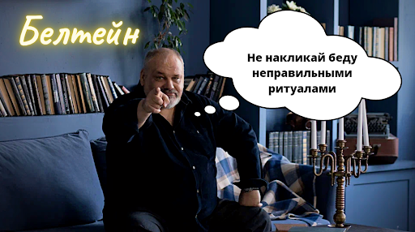

|
Вальпургиева ночь - как не накликать беду?

Уже в ночь с 30 апреля на 1 мая мы с вами сможем отметить один из самых популярных праздников Колеса Года - Белтейн, или как у нас его называют - Вальпургиева ночь.
Это время высвобождения мощных магических энергий для исполнения заветных желаний. Традиционно праздник отмечался разжиганием костров, прыжками для ритуального очищения, а также хороводами и песнями. Конечно, даже сейчас можно найти людей, которые отмечают этот праздник в соответствии с традициями, но большинство совмещают празднование с использованием стихийных магических практик. Чаще всего это конечно же - Огонь.
🔥Узнать больше о курсе Магия Огня
Используйте это магическое время для помощи себе или своим близким. Сделайте магическую практику на очищение или выздоровление. А, может быть, вам нужно привлечь финансы или любовь? В магические праздники такие желания осуществляются гораздо быстрее.
А если вы не знаете, какие магические практики использовать и что нужно делать, то мы вас с радостью научим.
Русская Школа Таро приглашает вас на два наших самых популярных и невероятно результативных курса по Магии Стихий.
Это Магия Огня
🔥Узнать больше о курсе Магия Огня
И Магия Воды
💦Узнать больше о курсе Магия Воды
Ну, а для тех, кто хочет получить максимальную пользу, мы сделали потрясающую возможность купить два курса комплектом со скидкой 50%.
🎁Получить оба курса со скидкой 50 процентов🎁
Создайте себе желаемую жизнь в Белтейн вместе с Русской Школой Таро.
Искренне Ваш, Сергей Савченко, Русская школа Таро 
|